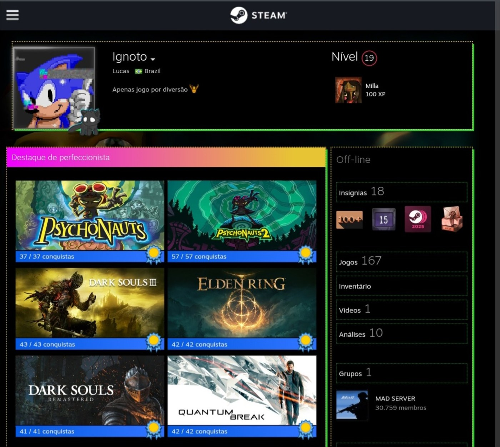
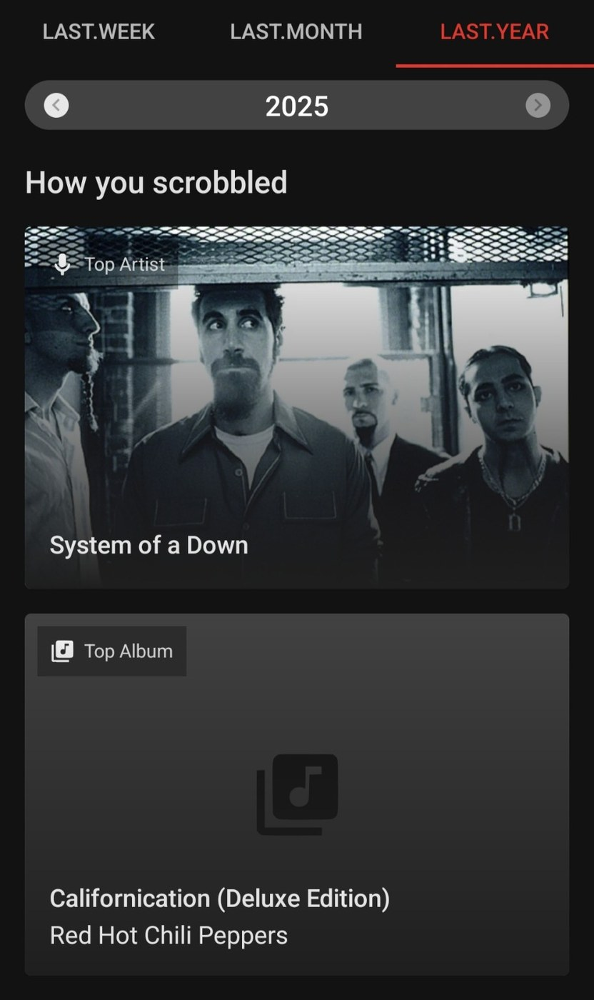

História
Estudante de Ciência da Computação na UFRJ, com uma base sólida em matemática construída ainda no Bacharelado em Ciências Matemáticas e da Terra antes da transferência de curso. Ao longo da graduação, venho combinando fundamentos teóricos (Álgebra Linear, Estatística e Probabilidade, Estruturas de Dados, Matemática Discreta, matérias que amo de exatas) com aplicação prática em projetos de dados reais: da análise de criminalidade no Rio de Janeiro com SVD, PCA e K-Means, à modelagem de um banco de dados relacional cruzando informações de transporte público (GTFS) e demografia da cidade.
Tenho interesse particular em transformar dados em decisões: gosto do processo completo, da limpeza e modelagem no banco até a construção de visualizações e dashboards que tornem os resultados acessíveis (já fiz isso com Streamlit, Pandas e Matplotlib).
Sou monitor de Cálculo I por 3 anos, o que aguçou minha didática e minha paciência para explicar o "porquê" por trás de cada conceito científico, habilidade que uso também nos minicursos de Python e Análise de Dados que ministro pela equipe For_code, e na gestão de pessoas que faço na UFRJ Analítica.
Busco uma oportunidade de estágio em Ciência de Dados ou Tecnologia da Informação onde eu possa continuar aprendendo, contribuir com análises que gerem impacto real e crescer perto de times que valorizem tanto rigor técnico quanto colaboração.
Minhas linguagens favoritas: Python, C, SQL e Java.
Objetivo
Vaga de estágio na área de Dados, com interesse em Ciência de Dados, Inteligência Artificial / Machine Learning e Engenharia de Dados, aplicando conhecimentos de banco de dados, estatística e desenvolvimento de software na resolução de problemas reais.
Formação Acadêmica
Bacharelado em Ciências Matemáticas e da Terra — UFRJ
Projetos
Classificador de Flores Iris com Machine Learning em C
- Programa desenvolvido em C para analisar o banco de dados Iris e treinar um modelo capaz de classificar a espécie de uma flor a partir das medidas de pétalas e sépalas.
- Implementação de algoritmo de classificação do zero, sem bibliotecas de alto nível, reforçando o entendimento dos fundamentos matemáticos por trás do aprendizado de máquina.
Análise dos Top 1000 Filmes do IMDB
- Análise exploratória de dados de um dataset com os 1000 filmes mais bem avaliados do IMDB, incluindo tratamento e limpeza dos dados com Pandas.
- Criação de visualizações estatísticas com Matplotlib e construção de um dashboard interativo em Streamlit.
- Versionamento do projeto com Git/GitHub.
Análise da Criminalidade no Rio de Janeiro
- Aplicação de SVD e PCA sobre dados de criminalidade do Instituto de Segurança Pública do Rio de Janeiro (ISP-RJ).
- Uso de K-Means para agrupamento de regiões com padrões de criminalidade semelhantes.
- Construção de visualizações para identificar tendências e padrões espaciais de criminalidade entre bairros.
- Versionamento com Git/GitHub em colaboração com o grupo.
Transportes Rio — Oferta de Transporte Público e Demografia
- Modelagem e implementação de um banco de dados relacional em MySQL correlacionando dados GTFS de transporte público com informações demográficas.
- Desenvolvimento de consultas SQL com joins, subqueries e agregações.
- Construção de aplicação web em Flask com mapa interativo.
- Uso de Geopandas para tratamento e cruzamento de dados geoespaciais.
- Colaboração via Git/GitHub em equipe.
Histórico Acadêmico
8,4
CR atual
136
Créditos obtidos
2022/2 → 2026/1
Período acadêmico
2022/2
| Código | Disciplina | Nota | Situação |
|---|---|---|---|
| ICP121 | Computação I | 8,5 | AP |
| CMT111 | Inovações Cient Tecn e Art I | 7,2 | AP |
| FIW112 | Introdução à Física A | 10,0 | AP |
| FIW113 | Introdução à Física B | 10,0 | AP |
| MAW117 | Introdução ao Cálculo | 10,0 | AP |
| CMA110 | Tóp Gerais Ciências da Terra | 8,4 | AP |
2023/1
| Código | Disciplina | Nota | Situação |
|---|---|---|---|
| ICP241 | Computação II | 9,5 | AP |
| MAC118 | Cálculo Difer e Integral I | 10,0 | AP |
| FIS111 | Física Experimental I | 7,1 | AP |
| CMT121 | Inovações Cient Tecn e Art II | 10,0 | AP |
| CMT012 | Introdução à Programação C/c++ | 9,2 | AP |
2023/2
| Código | Disciplina | Nota | Situação |
|---|---|---|---|
| NCG011 | Acessando a Mente e o Espaço | 10,0 | AP |
| MAC128 | Cálculo Diferen e Integral II | 6,7 | AP |
| NCG017 | Empreendedorismo Tecnol e Ciên | 9,0 | AP |
| CMT231 | Inovações Cient Tecn e Art III | 10,0 | AP |
| IGT603 | Poluição do ar | 7,0 | AP |
2024/1
| Código | Disciplina | Nota | Situação |
|---|---|---|---|
| ICP111 | Fund Computação Digital | 7,8 | AP |
| FIT111 | Física I | 6,9 | AP |
| MAE125 | Álgebra Linear | 6,9 | AP |
2024/2
| Código | Disciplina | Nota | Situação |
|---|---|---|---|
| ICP136 | Introd Pensamento Dedutivo | 9,2 | AP |
| ICP134 | Números Inteiros Criptografia | 9,6 | AP |
| ICP142 | Organização de Dados I | 9,0 | AP |
| ICP132 | Processos de Software | 5,9 | AP |
| ICP135 | Projeto de Carreira | 9,3 | AP |
2025/1
| Código | Disciplina | Nota | Situação |
|---|---|---|---|
| ICP145 | Habilidades Sociais p Trabalho | 9,2 | AP |
| ICP238 | Introd à Computação Numérica | 7,8 | AP |
| ICP237 | Introd à Modelagem de Sistemas | 8,3 | AP |
| ICP144 | Matemática Discreta | 7,7 | AP |
| ICP143 | Projeto Prático | 8,6 | AP |
| NEP101 | Teoria Direitos Fundamentais | 10,0 | AP |
2025/2
| Código | Disciplina | Nota | Situação |
|---|---|---|---|
| ICP246 | Arquitet Comput e Sist Operac | 5,4 | AP |
| MAD243 | Estatística e Probabilidade | 7,9 | AP |
| ICP116 | Estruturas de Dados | 5,7 | AP |
| ICP115 | Álgebra Linear Algorítmica | 9,8 | AP |
2026/1
| Código | Disciplina | Nota | Situação |
|---|---|---|---|
| ICP489 | Banco de Dados I | 6,6 | AP |
| ICP248 | Comput Científ e Análise Dados | 7,8 | AP |
| ICP239 | Programação Orientada a Objeto | 7,0 | AP |
| ICP249 | Tecnologia e Sociedade | 9,7 | AP |
Trabalho Voluntário
Lar Mãe Ritinha (lar de idosas) — Voluntário
- Controle e análise em Excel da chegada de alimentos doados à instituição.
- Criação de painel em Power BI para visualização e acompanhamento dos dados de doações.
Cursos e Atividades Complementares
For_code
- Desenvolvimento de exercícios e scripts práticos em Python e SQL nos minicursos de Análise de Dados.
- Atuação como instrutor, ensinando conceitos de LGPD e orientando a aplicação prática dos conteúdos em Notion.
Competências Técnicas
- Linguagens: Python, C, Java, SQL
- Dados: Pandas, Matplotlib, Geopandas, MySQL, Excel, Power BI, PCA, SVD, K-Means
- Web/Frameworks: Flask, Streamlit, HTML
- Ferramentas: Git, GitHub
Idiomas
- Português: Nativo
- Inglês: Intermediário
- Espanhol: Intermediário
Minha cultura
Uma parte importante de quem eu sou também está nos jogos, filmes e músicas que gosto.

Steam Meu perfil e meus jogos
Last.fm Artistas que mais tenho ouvido Letterboxd Filmes e atividadeMeus jogos favoritos
- Psychonauts
- Psychonauts 2
- Dark Souls Remastered
- Dark Souls III
- Elden Ring
- Quantum Break
Artistas que mais tenho ouvido
- Red Hot Chili Peppers
- Nickelback
- System of a Down
- Radiohead
- Fresno
Filmes
Minha atividade cinematográfica pode ser acompanhada pelo meu perfil no Letterboxd.
Ver meu LetterboxdOutros lugares onde me encontrar
Minijogos
🐍 Campo Minado em Python
Campo Minado desenvolvido em Python, com a lógica do jogo rodando de verdade dentro do navegador (via Pyodide).
Prevendo Notas Futuras (ML)
Um modelo simples de regressão linear, rodando em Python de verdade dentro do navegador (via Pyodide), treinado com as minhas próprias notas dos períodos 1 a 4. Para cada disciplina que já cursei, ele relaciona a média das notas dos pré-requisitos oficiais (grade curricular do IC/UFRJ) com a nota que tirei nela — e usa essa relação para estimar disciplinas do 5º e 6º período que ainda não cursei.
Avalie-me
Já me conhecia a partir de monitorias? Consegui te ajudar em algo educacional? Te fiz aprender com meus vídeos do meu canal do YouTube? Pode me avaliar.
Dou monitoria há 3 anos de Cálculo I, Introdução ao Cálculo e agora Organização de Dados, por isso gosto de saber o que acharam das minhas monitorias e dos meus métodos.
Como foi sua experiência?
Selecione uma avaliação
Média das avaliações
0,0
★
★★★★★
★★★★★